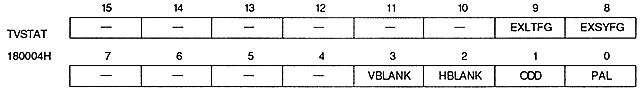

DASEL | Processing |
0 | Display images only in the settings display area |
1 | Display image in all standard display areas |
EXBGEN | Processing | ||
0 | Do not enter external screen data |

External latch flag : External latch flag (EXLTFG), bit 9
EXLTFG | HV counter value status |
0 | Not yet latched in register |
1 | latched in register |
EXSYFG | External synchronization state |
0 | not sync |
1 | Internal circuit synchronized |